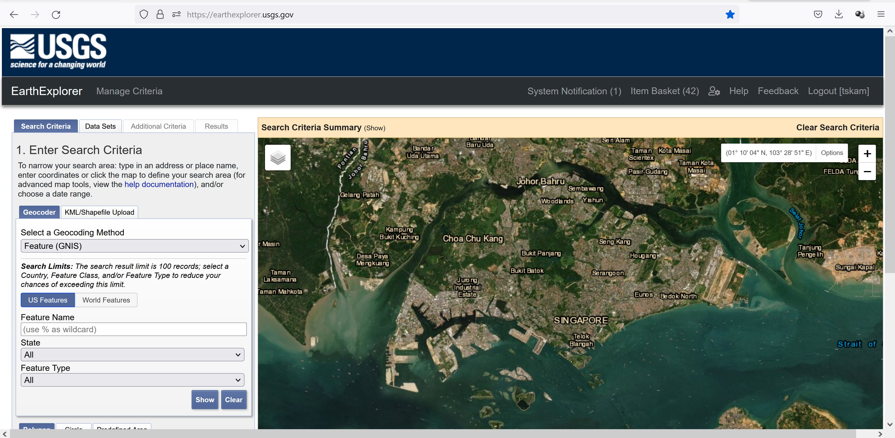

Lesson 8: Fundamentals of Remote Sensing
Dr. Kam Tin Seong
Assoc. Professor of Information Systems
School of Computing and Information Systems,
Singapore Management University
2025-03-23
Content
- Principles of Remote Sensing
- Physical Principles of Remote Sensing
- Basic principles of remotely sensed data
- Spectral resolution
- Spatial resolution
- Remotely Sensed Data Sources
- Urban Applications of Remotely Sensed Data
- Digital Image Analysis Methods image
Principles of Remote Sensing
- Remote sensing refers to the activities of recording, observing, and perceiving (sensing) objects or events in far-away (remote) places.
- In remote sensing, the sensors are not in direct contact with the objects or events being observed.
- Electromagnetic radiation normally is used as the information carrier in remote sensing.
- The output of a remote sensing system is usually an image representing the scene being observed.
- A further step of image analysis and interpretation is required to extract useful information from the image.
History of remote sensing
- The use of aerial Earth survey has started immediately with the invention of the photographic method.
- The first aerial photograph was taken by Gaspard-Félix Tournachon (known by the pseudonym Nadar) in 1858. It was a picture of a village near Paris captured from a balloon at an altitude of 80 m.
History of remote sensing: pigeon photographer method
In 1907, Julius Neubronner, a pharmacist, invented the pigeon photographer method for aerial photography. Initially, he used carrier pigeons to deliver medicines, and then he decided to make an experiment designing an aluminium chest harness with minicamera for pigeons, which took automatic photos at regular intervals. Subsequently, in 1909, Neubronner sold some of such pigeon photography images turned into postcards.
History of remote sensing: aerial photographs
- Aerial photographs started to be taken from planes in 1909.
- Aerial photography was used during the World War I in military intelligence.
- The period between the two world wars was marked with the development of methods for civil application of aerial photography, first of all in cartography, geology, agriculture and forestry.
- Cameras, films and aircrafts improved along with significant development of stereographic mapping method.
History of remote sensing: space
- Exploration of the outer space was the revolutionary step in the development of remote sensing techniques.
- Manned spacecrafts, artificial Earth satellites and orbital stations started to deliver extensively satellite images.
- The first photographs of ground surface have been captured by TIROS weather satellite and Mercury 1–4 spacecrafts in 1960–1962.
- Image on the right shows the first space photograph taken in 1946. The image captures Mexico.
History of remote sensing: Earth observation drone
- Although drone was first introduced in the early 1970s, civilian applications of drone only gaining attention since 2016.
- Earth observation drone for urban analysis, on the other hand, is a very recent area of research.
- Visit this link to learn more about drone image versus satellite imagery.
A 5cm resolution aerial photo take from drone.
Physical Principles of Remote Sensing
Electromagnetic Radiation
Electromagnetic spectrum is a system, which “classifies all energy by wavelengths (from short wavelength cosmic energy to long wavelength radio waves) that travel harmonically with constant speed of light” (NASA, 2013).
Spectrum
- The range of electromagnetic waves with different frequencies is called a spectrum.
- The following ranges of electromagnetic radiation such as ultraviolet, visible, infrared, microwave, and radio are used to obtain remote sensing data.
- Ultraviolet range (0.1–0.38 μm) is used to assess the state of plants and water reservoirs, and determine the expansion of trace gases and ozone in atmosphere.
- Visible (0.38–0.74 μm) range and infrared (0.75–1000 μm), which is divided into three types due to its wide range: near-infrared (0.75–1.5 μm), intermediate (1.5–3 μm) and far-infrared (3–1000 μm) radiation. Near-infrared and visible ranges are widely used to obtain images of forest areas.
- Thermal range (2.5 μm — 1 mm) provides information on the heat field. It has been shown that the temperature difference can reach several degrees in different types of vegetation, plantations of different densities, composition and age, in the surface layer, at the level of the surface and in the soil.
- Microwave radiation (1 mm — 1 m) range provides information about topographic characteristics of territories and water zones, deposits of moisture in soil and plant leaves, effects of industrial emission on plants.
- Radio frequency range (1 m — > 10 km) provides information about the underlying terrain. It allows for analysis of the relief of the territory, identification of hazardous natural processes, such as mudflows, landslides etc. Radar photography is possible under any weather conditions and at any time of the day.
Passive and Active Remote Sensing
RS system measuring natural emission operates with passive remote sensing. Accordingly, this system can sense only when there is natural emission available:
- during the day — in the visible range;
- during the day and at night — in thermal infrared and microwave range.
Active sensors, on the other hand, provide their own energy source for illumination. Active sensors can be used for examining wavelengths that are not sufficiently provided by the sun, such as microwaves, or to better control the way a target is illuminated. Some examples of active sensors are a laser fluorosensor and a synthetic aperture radar (SAR).
Popular Remotely Sensed Data: Landsat
The Landsat program is the longest-running enterprise for the acquisition of satellite imagery of the Earth.
The first satellite within the program was launched in 1972, the most recent one, Landsat 8, on February 11, 2013.
Spatial and spectral resolution of Landsat 1-5
Landsat 1 through 5 carried the Landsat Multispectral Scanner (MSS).
Spatial and spectral resolution of Landsat 4-5
Landsat 4 and 5 carried both the MSS and Thematic Mapper (TM) instruments.
Spatial and spectral resolution of Landsat 7
Spatial and spectral resolution of Landsat 8
- Landsat 8 satellite carries the Operational Land Imager (OLI) and the Thermal Infrared Sensor (TIRS) instruments.
- The OLI measures in the visible, near infrared, and shortwave infrared portions (VNIR, NIR, and SWIR) of the spectrum.
- The TIRS measures land surface temperature in two thermal bands with a new technology that applies quantum physics to detect heat.
Spatial and spectral resolution of Landsat 8
Landsat 8 images have 15-meter panchromatic and 30-meter multi-spectral spatial resolutions along with two TIRS bands at 100 meter resolution.
Source: Landsat 8, USGS
Acquiring Landsat data
Landsat data can be acquired from various source. The most popular source is EarthExplorer of USGS.

Popular Remotely Sensed Data: Sentinel
Sentinel is the Copernicus Programme satellite constellation conducted by the European Space Agency. The Sentinel missions have the following objectives:
- Sentinel‑1 provides all-weather, day and night radar imaging. The first Sentinel‑1A satellite was successfully launched in 2014, and the second, Sentinel‑1B, in two years — on 25 April 2016.
- Sentinel‑2 provides high-resolution optical imaging for land services (e. g. imagery of vegetation, soil and water cover, inland waterways and coastal areas). Sentinel‑2 also provides real-time information for emergency services. The first Sentinel‑2 satellite was successfully launched on 23 June 2015.
- Sentinel‑3 provides ocean and global land monitoring services. The first Sentinel‑3A satellite was launched on 16 January 2016.
- Sentinel‑4 will be launched in 2023. It is intended to provide data for monitoring of atmospheric composition and operate jointly with a Meteosat Third Generation Satellite.
Spatial and spectral resolution of Sentinel-2
The Sentinel-2 satellites each carry a single multi-spectral instrument (MSI) with 13 spectral channels in the visible/near infrared (VNIR) and short wave infrared spectral range (SWIR).
Fundamentals of Image Processing
Contrast enhancement
Contrast enhancement or stretching is performed by linear transformation expanding the original range of gray level. In raw imagery, the useful data often populates only a small portion of the available range of digital values (commonly 8 bits or 256 levels). Contrast enhancement involves changing the original values so that more of the available range is used, thereby increasing the contrast between targets and their backgrounds.
Landsat Band 1 before enhancement
Landsat Band 1 after contrast enhancement
Image histogram
The key to understanding contrast enhancements is to understand the concept of an image histogram.
A histogram is a graphical representation of the brightness values that comprise an image. The brightness values (i.e. 0-255) are displayed along the x-axis of the graph. The frequency of occurrence of each of these values in the image is shown on the y-axis.
The simplest type of enhancement is a linear contrast stretch. This involves identifying lower and upper bounds from the histogram (usually the minimum and maximum brightness values in the image) and applying a transformation to stretch this range to fill the full range.
- In our example, the minimum value (occupied by actual data) in the histogram is 84 and the maximum value is 153. These 70 levels occupy less than one-third of the full 256 levels available. A linear stretch uniformly expands this small range to cover the full range of values from 0 to 255. This enhances the contrast in the image with light toned areas appearing lighter and dark areas appearing darker, making visual interpretation much easier.
Spatial Filtering
Spatial filtering encompasses another set of digital processing functions which are used to enhance the appearance of an image.
Spatial filters are designed to highlight or suppress specific features in an image based on their spatial frequency.
Spatial frequency is related to the concept of image texture,
A common filtering procedure involves moving a ‘window’ of a few pixels in dimension (e.g. 3x3, 5x5, etc.) over each pixel in the image, applying a mathematical calculation using the pixel values under that window, and replacing the central pixel with the new value.
The low pass filters (Smoothing)
Smoothing filters (low – pass) straighten data by reducing local variations and removing the noise. The low pass filter calculates the average value for each neighbouring pixel. The result is that the average of the high and low values of each neighbour will be reduced, which will reduce the data extreme values.
Landsat Band 8 before filtering
Landsat Band 8 after low pass filters
The high pass filters (Smoothing)
The Sharpness filter accentuates the values comparative difference among neighbours. A high pass filter calculates the sum of Statistics focal length for each cell of the input using a weighted neighbourhood of the core. It highlights the boundaries among features (for example, when a body of water meets the forest), accentuating, thus, the contours among the objects. The high pass filter is called contour improvement filter. The core high pass filter identifies which cells to use in the neighbourhood and their weights.
Landsat Band 8 with high pass filtering
Edge detection filters
The third type of filters relates to the detection of edges of the geographical objects.
Landsat Band 8 with edge detection filters
Band Combinations, Ratios and Indices
- Normalized Difference Vegetation Index (NDVI)
- Normalized Difference Built-up Index (NDBI)
Normalized Difference Vegetation Index
The Normalized Difference Vegetation Index (NDVI) (Kriegler et al. 1969) quantifies vegetation by measuring the difference between near-infrared (which vegetation strongly reflects) and red light (which vegetation absorbs). The NDVI is given by (Akbar 2019):
NDVI= ( NIR − Red) / (NIR + Red )
where NIR and Red is the surface reflective-values for the near infrared (NIR) and the red (R) spectral bands.
Calculations of NDVI for a given pixel always result in a number that ranges from minus one (-1) to plus one (+1).
In general, healthy vegetation (chlorophyll) reflects more near-infrared (NIR) and green light compared to other wavelengths. But it absorbs more red and blue light. When you have high NDVI values, you have healthier vegetation.
Normalized Difference Built-Up Index (NDBI)
This index highlights urban areas where there is typically a higher reflectance in the shortwave-infrared (SWIR) region, compared to the near-infrared (NIR) region.
The general formula of NDBI is
NDBI = (SWIR – NIR) / (SWIR + NIR)
whereby NIR and SWIR are the near infrared (NIR) and the Short-Wave infrared (SWIR) bands respectively.
Similar to NDVI, the NDBI value lies between -1 to +1. Negative value of NDBI represent water bodies where as higher value represent build-up areas. NDBI value for vegetation is low.
Applications include watershed runoff predictions and land-use planning.
The NDBI was originally developed for use with Landsat TM bands 5 and 4. However, it will work with any multispectral sensor with a SWIR band between 1.55-1.75 µm and a NIR band between 0.76-0.9 µm.
Colour Composite Images
In displaying a colour composite image, three primary colours (red, green and blue) are used. When these three colours are combined in various proportions, they produce different colours in the visible spectrum. Associating each spectral band (not necessarily a visible band) to a separate primary colour results in a colour composite image.
True colour composite image
- If a multispectral image consists of the three visual primary colour bands (red, green, blue), the three bands may be combined to produce a “true colour” image. In this way, the colours of the resulting colour composite image resemble closely what would be observed by the human eyes.
- This band combination is well suited for the analysis of aquatic ecosystems, determining water depth. It is also used to study man-made features.

Notice that healthy vegetation appears green, cleared fields are light, unhealthy flora is brown and yellow, roads are grey, and coastlines appear whitish.
Flase colour composite image
- The display colour assignment for any band of a multispectral image can be done in an entirely arbitrary manner. In this case, the colour of a target in the displayed image does not have any resemblance to its actual colour. The resulting product is known as a false colour composite image.
- Image on the right is a false colour composite image created by using Landset 8 Band 5-4-3.
- This combination is very popular and is used for analyzing vegetation, monitoring soil and crops.
Notice that vegetation appears in shades of red, urban areas are green-blue, and the soil color varies from dark to light brown. The shades of deep red indicate healthy and/or broadleaf vegetation, while grassy or sparse/shrubby vegetation appears in lighter shades.
Reference
- Richards, John A (2013) Remote Sensing Digital Image Analysis: An Introduction, Springer.
- Canada Centre for Remote Sensing Fundamentals of Remote Sensing.